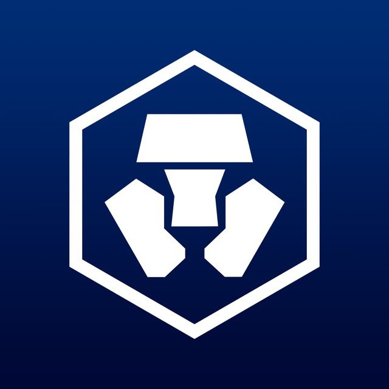

周伟(Chacha Zhou)
资深前端开发工程师
9年开发经验 / 大专 / 30岁
13798247501 chachazw@gmail.com
超过9年的前端开发经验，包括 React 和 Vue 大型 Web 应用、区块链 Web3 应用、Solidity 智能合约、ReactNative App、Flutter 跨平台App，也有一定的 Nodejs 经验，擅长构建高效、美观的用户界面，致力于提升用户体验和性能优化，曾作为10名大前端开发团队技术负责人。
-
2023.12-至今
FameEX (迪拜) / 研发部资深前端开发工程师
React Redux NextJS Typescript1. 负责 FameEX 交易所现货业务开发，包括现货行情，K线图，订单薄，现货下单，现货持仓订单等核心模块，开发高性能和可复用组件。
2. 负责 FameEX 交易所合约业务重构和开发，包括合约行情，K线图，订单薄，合约下单，合约持仓订单等核心模块，提高交易页面性能和响应速度。
3. 负责 FameEX 交易所登录注册业务模块重构和页面开发，修复和解耦业务逻辑问题。
4. 负责 FameEX 交易所跟单业务开发，包括跟单广场，用户跟单列表，用户跟单持仓等核心模块。
-
2023.02-2023-09
Sender Wallet / 全职远程资深软件开发工程师
React React-Native Javascript Chrome Extension1. 负责 Sender 多链钱包插件端业务开发，包括 EVM 链功能开发，Ton 链功能开发和 Near 链功能开发。
2. 负责 Sender 插件端 Dapp 功能开发，包括 Ethereum Provdier 和 Near Provider API 设计与开发，为第三方 Dapp 提供钱包接入 API 和 开发文档。
3. 为 Near 钱包开源项目 wallet-selector 贡献代码，根据 Near API 标准开发 Sender Wallet API。
4. 迭代 Ledger和 Keystone 硬件钱包功能到 Sender 插件，提高插件钱包功能安全性和可维护性。
5. 负责用户钱包资产管理网站 Portfolio 开发，对接用户多链资产余额，对接 Lido API 开发资产质押功能，对接 Dodo API 开发资产兑换功能。
6. 负责 Sender 多链钱包移动端业务开发，包括 Ton 链功能对接，开发 Ton 生态质押功能，为 Ton 生态 Dapp 提供 API 接入。
-
2022.05-2023-01
Crypto.com - 福里斯科技(深圳)有限公司 ／ 交易所团队资深软件开发工程师
React Vue3 CI/CD Typescript1. 作为大型前端团队的资深软件开发工程师，负责 crypto.com 交易所核心功能开发，包括会员邀请数据报表、用户安全认证模块等。
2. 与后端开发人员集成 Yubikey Webauthn 到交易所用户安全认证模块，并集成 Yubikey Web 应用到 Android 和 iOS 应用，提高用户交易的安全性。
3. 将组件集成到 UI 组件库 X-UI，集成界面开发者工具，提高开发人员开发和调试效率，开发 UI 组件单元测试，并提高测试覆盖率。
4. 负责我们的交易所和 Yubikey 项目的持续集成，整合 Circle CI 和 Github Actions 工作流到项目中，提高项目部署自动化水平。
5. 负责Vue3迁移项目的技术架构，引入 monorepo 最佳实践，开发 Playground 开发者工具并改进页面开发效率。
-
2019.01-2022.04
坎德拉 (深圳) 科技创新有限公司 ／ 平台研发部大前端组长
React Vue Gatsby Flutter Dart Typescript1. 作为大前端技术团队的负责人，负责 Web 端、小程序、Flutter App的项目管理和研发，负责移动端跨平台技术研发、项目管理、工程化和自动化部署。
2. 团队管理，任务安排与调度，跟进前端项目开发进度，改善前端工作流程和产品体验，参与产品需求、交互和 设计讨论，并制定合适的解决方案。
3. 团队建设，团队内部定期举行技术分享会，营造团队工程师文化氛围， 定期进行团队技术培训，提升团队技术水平和研发能力。
4. 负责前端机器人大屏监控，机器人远程控制，以及架构设计和技术研发，并使用 D3、fabricJS、ThreeJS 等开发可视化图形编辑工具。
5. 负责原生 iOS 和 Android 应用的跨平台技术架构设计，结合原生开发技术和 Flutter 跨平台技术混合开发，以 解决一套代码的多端复用问题。
-
2018.09-2019.01
 OlympusLabs ／ 研发部
OlympusLabs ／ 研发部前端开发工程师
React Typescript Web3.js Redux1. 负责 Web3 dapp 和 DeFi SDK 开发，前端对接以太坊智能合约和 imToken 钱包。
2. 开发 DeFi 衍生品管理系统 Olympus Portal 项目，提升前端用户体验和性能。
3. 将 dapp 与 Metamask 连接起来，构建用户钱包账户和交易数据可视化界面。
4. 改善前端工作流程和应用体验，参与产品需求、交互和设计讨论，并提供合适的解决方案。
-
2017.06-2018.08
 Plum Flower International LLC ／ 研发部 / 全职远程
Plum Flower International LLC ／ 研发部 / 全职远程前端组长
React Flow Jest NextJS Javascript1. 担任7人前端开发团队技术负责人，负责前端项目技术研发。
2. 团队管理，任务安排与协调，跟进前端项目开发进度，完善技术文档。
3. 负责美国大型市政前端项目性能优化、前端架构设计和技术选型，负责前端工程和自动部署。
4. 提升前端工作流程和产品体验，参与产品需求、交互和设计讨论，并制定合适的解决方案。
-
2016.08-2017.06
 风变科技(深圳)有限公司 ／ 研发部
风变科技(深圳)有限公司 ／ 研发部前端开发工程师
Vue VueX Node.js Javascript1. 作为技术团队的核心成员，负责前端开发技术选型、技术架构、 前端页面重构、交互逻辑的实现以及前端数据处理，开发渐进式前端页面。
2. 使用Express Nodejs框架作为中间层开发前端数据接口，使用 Vue 前端框架开发图书管理系统，负责前端工程CI/CD。
3. 负责制定前端发布流程和开发规范，设计微信 WebA pp 多页项目架构和工作流程。
-
FameEX 交易所
2023.12-至今
FameEX 交易所是一家新兴的全球加密资产交易所，为加密用户提供安全、简单的加密货币衍生品和现货交易服务。
1. 使用 React, Typescript 和 NextJS 开发交易所核心业务，包括通用组件开发，核心业务页面和业务逻辑开发。
2. 负责现货和合约业务K线图行情模块，利用 TradingView 开发高性能K线图组件，提高前端K线图及时性和可用性。
3. 负责现货和合约业务订单薄组件开发，利用 Websocket 技术开发及时响应的订单薄列表，提升订单薄列表组件渲染性能和响应速度。
4. 开发交易所现货和合约下单，最新成交模块，包括限价单，市价单，委托单，止盈止损等核心业务等开发。
5. 负责交易所现货持仓列表，历史订单列表，交易列表等业务，提升列表性能和数据响应及时性。
6. 解决交易所现货和合约业务跨浏览器兼容性问题，以及移动端平台页面响应式和兼容性问题的处理。
-
Sender Wallet 钱包
2023.02-2023.08
Sender 是一个基于 near 链, EVM 链和 Ton 链构建的浏览器扩展钱包和移动端钱包，其目标是为 DeFi 和 NFT 用户提供一个安全且易于使用的钱包应用。
1. 搭建基础技术架构，引入 React、Redux、Webpack 到插件开发。
2. 使用 ethers.js 和 near api 进行跨链功能开发，开发 Staking、Swap 和 NFT 功能。
3. 将 Ledger 和 Keystone 硬件钱包集成到 Sender 钱包，提升帐户交易安全性。
4. 负责钱包插件端跨浏览器兼容性问题，以及移动端钱包跨平台兼容性问题的处理。
5. 负责 Sender 移动端钱包 Ton 链的接入，开发 Ton 代币转账收款功能，Ton NFT 资产转账功能，Ton 钱包账号创建功能，以及Ton 生态 Dapp API的开发。
-
Crypto.com 交易所
2022.05-2023.01
Crypto.com 交易所是使用 Vue2和 Vue3 框架开发的大型加密货币交易所应用，并在全球范围内拥有超过7000 万用户。
1. 使用 Vue2 和 Vue3 框架开发前端功能，开发UI组件并添加Jest单元测试，修复浏览器兼容性问题。
2. 将 Circle CI 和 Github Actions 集成到 CI/CD 工作流程中，并集成错误监控工具到前端系统中，提升前端线上环境运行效率。
3. 负责 Vue3 迁移项目架构设计，探索多页面和单页面应用工程化开发，提高项目的可维护性和可扩展性。
4. 申请和配置 AWS 基础设施资源，优化项目部署工作流程，提高前端部署效率。
-
综合业务管理平台
2019.02-2022.04
综合业务管理平台是面向机器人行业的大型后台管理系统，集快递业务、外卖业务、机器人共享配送于一体 的业务系统。平台包括设备管控平台、机器人实时监控系统，监控中心、对账管理、用户管理、权限管理、消息中心及其他核心业务模块。
1. 用 React 和 Typescript 技术栈从零搭建后台管理系统的基础技术架构，制定前端开发、UI组件库、Jest 单元测试及 Git Workflow 规范。
2. 负责业务管理平台相关核心模块的技术研发，包括大屏数据监控、基于 Websocket 的机器人实时监控和控制，以及使用 D3 和 e-chart 构建机器人数据可视化。
3. 为机器人平板应用和 Flutter App 开发版本控制管理系统，提高机器人平板应用部署和测试效率。
-
驿站仓管 Flutter App
2020.08-2022.04
驿站仓管是一个用 Flutter 开发的跨平台移动端机企业业务管理应用，主要核心业务包括设备管理， 智能装箱，扫码取件，外卖订单管理，共享订单管理，滞留件管理等，是一个机器人智能业务综合管理应用。
1. 搭建Flutter基础技术架构，开发Flutter公用组件模块。
2. 负责核心业务智能装箱，设备管理等核心业务的技术开发。
3. 负责 App 应用打包工程化相关业务流程，对接 Fastlane 和 Gradle 打包工具。
4. 开发了 Flutter 组件模块 cti_services, cti_widgets, cti_utils 等公共组件模块。
5. 引入 Redux 状态管理机制到 Flutter 应用，处理安卓和 iOS 跨平台兼容性问题。
-
Aurora Company App
2018.05-2019.01
Aurora Company App 是一款集职位发布、人才招聘、即时通讯为一体的企业招聘服务SaaS应用。 企业可在此平台发布招聘信息，与应聘者在线交流。用户端有 Aurora Candidate App，普通用户可以在该发布简历，在平台上寻找合适的工作机会，同时可以与企业进行在线即时聊天，在线共享文件。
1. 作为前端开发负责人，带领来自全球的6位开发者进行远程开发协作， 制定详细的开发任务，合理分配任务给团队成员，并确保高效的团队协作。
2.设计前端基础设施和前端开发工作流程，制定统一的前端模块化开发标准， 为团队编写高质量的代码提供稳定的架构基础。
3. 统一前端代码规范，编写前端代码规范文档，规范前端代码风格，并建立代码风格 Check Lists，为团队成员提供良好的编码基础。
4. 制定Git标准化工作流程和前端代码审查流程，与 DevOps 合作 开发人员制定 Web 应用的自动部署流程，以确保持续集成和持续交付。
5. 制定前端UI组件库的开发规范和标准，使用 Storybook 协同开发通用组件库和组件描述文档，使用 Rollup 将 UI 组件库打包压缩发布到 NPM 上，为多个 Web 应用的开发提供复用和扩展的可能性， 解决了多个应用程序之间耦合的问题。
6. 制定前端组件Jest测试规范，与团队成员共同编写组件测试用例，提高前端组件测试覆盖率，减少代码错误率。
-
Eco Web App
2017.06-2018.09
EcoAppPro 是城市公用事业管理软件的新标准，是一种高效和现代的移动GIS集成系统。 该项目是一个响应式的大型前端项目，使用 React 技术栈开发，包括 Communications、User Center、Assets、System Manager、Personnel 和 Logbook 模块。
1. 作为前端技术负责人，设计和搭建前端技术基础设施，带领 5名前端成员协同开发，制定合理的开发任务。
2. 编写比较通用的前端开发标准，在 Jira 上给团队成员分配任务，审查成员代码， 控制前端开发进度，实现敏捷项目开发。
3. 项目中使用的技术栈包括 React, Redux, React-router, Recompose, Redux-saga, Flow 和 Semantic-ui-react等，并利用上述技术栈构建稳定高效的前端技术架构，设计和开发可重用的前端基础组件。
4. 使用 Webpack 实现一系列的工程开发，包括压缩打包前端资源文件，前端 CSS 样式文件的生成与合并，前端 JS 代码分割和异步加载，并使用 CDN 缓存服务来提高 Web 性能和 Web 应用程序的体验。
5. 使用 Jest 测试工具搭建前端测试环境，为组件编写完整的单元测试用例，提高组件质量和测试覆盖率。
-
2021-至今
深圳大学本科 / 计算机科学与应用
-
2013-2016
深圳职业技术学院大专 / 通信技术
-
CET-6 / Fluent
英语
-
 http://chachaxw.github.io
http://chachaxw.github.io
-
 https://twitter.com/ChachaCryptoX
https://twitter.com/ChachaCryptoX